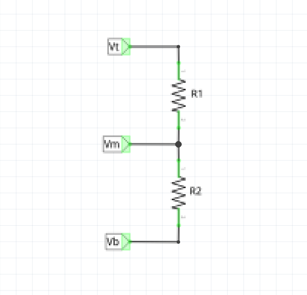
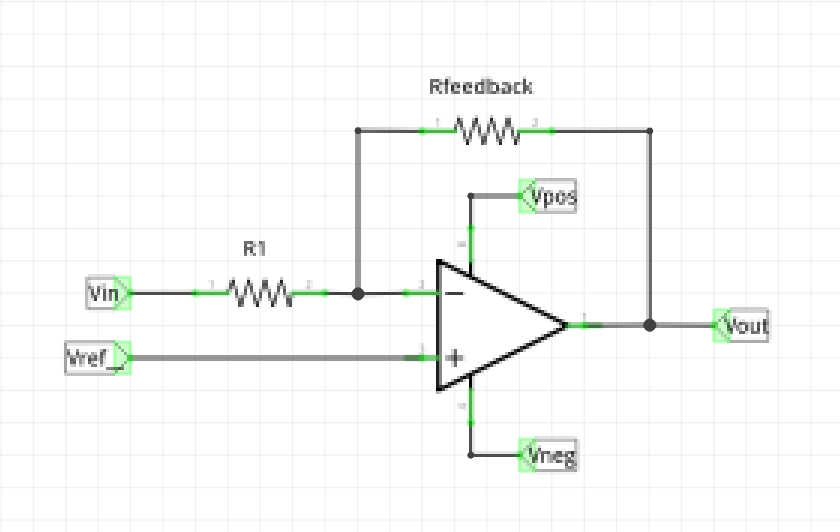
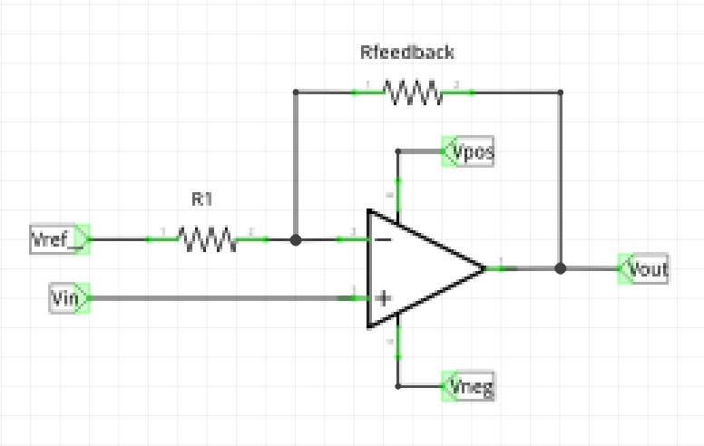

We start with the generalized resistor divider circuit.

Vt, Vm and Vb represent the voltages at the top, middle, and bottom of the resistor divider, respectively.
R1 is the resistor on the top, and R2 is the resistor on the bottom.
Assuming V
t and V
b are fixed, and solving for V
m, we get:
Vm = Vb + (Vt - Vb) * (R2 / (R1 + R2))
Before going any further, let's define a couple values for the resistor term in this equation. First, invert the original term to get:
(R1 + R2) / R2
Then expand and simplify it:
R1 / R2 + R2 / R2
R1 / R2 + 1
Then our definitions for gain are:
Gi = R1 / R2
Gn = (R1 / R2) + 1
Gn = Gi + 1
G
i is the gain for an inverting op amp, and G
n is the gain for a non-inverting op amp.
Using our new definitions, we can rewrite the solution for Vm as:
Vm = Vb + (Vt - Vb) / Gn
This single equation solves the following circuits:
Resistor divider
Inverting opamp
Non-inverting opamp
This table shows the substitutions for Vt, Vm and Vb for each of these solutions.
| Resistor Divider | Inverting Opamp | Non-Inverting Opamp |
| Vt | Vin | Vout | Vout |
| Vm | Vout | Vref | Vin |
| Vb | Vb | Vin | Vref |
Let's examine each of these circuits.
Resistor Divider
Starting with the generalized equation, use the substitutions from the table above for resistor dividers,
and replace Gn with its definition.
Vm = Vb + (Vt - Vb) / Gn
Vt = Vin
Vm = Vout
Gn = (R1 / R2) + 1
Vout = Vb + (Vin - Vb) / Gn
Vout = Vb + (Vin - Vb) * R2 / (R1 + R2)
In a resistor divider, Vb is usually zero. Removing those terms yields:
Vout = Vin * R2 / (R1 + R2)
Which is the classic resistor divider equation we all know and love.
Inverting Opamp

Again, starting with the generalized equation, do the substitutions for inverting opamps.
Vm = Vb + (Vt - Vb) / Gn
Vt = Vout
Vm = Vref
Vb = Vin
Vref = Vin + (Vout - Vin) / Gn
Solve for Vout.
Vref = Vin + Vout / Gn - Vin / Gn
Vref = Vout / Gn + Vin - Vin / Gn
Gn * Vref = Vout + Gn * Vin - Vin
Gn * Vref = Vout + Vin * (Gn - 1)
Gn * Vref = Vout + Vin * Gi
Gn * Vref - Vin * Gi = Vout
Vout = Gn * Vref - Vin * Gi
Vref in an inverting opamp circuit is normally 0, so removing that term results in the classic inverting opamp equation.
Vout = - Vin * Gi
Non-Inverting Opamp

As before, start with the generalized equation and do the substitutions for non-inverting opamps.
Vm = Vb + (Vt - Vb) / Gn
Vt = Vout
Vm = Vin
Vb = Vref
Vin = Vref + (Vout - Vref) / Gn
Solve for Vout.
Vin * Gn = Vref * Gn + Vout - Vref
Vin * Gn = Vref * Gn - Vref + Vout
Vin * Gn = Vref * (Gn - 1) + Vout
Vin * Gn = Vref * Gi + Vout
Vin * Gn - Vref * Gi = Vout
Vout = Vin * Gn - Vref * Gi
Again, Vref is normally 0, so removing that term results in the classic non-inverting opamp equation.
Vout = Vin * Gn
So there you have it. There really aren't separate equations for resistor dividers and opamps.
There is only one equation, and it merits being memorized.
Vm = Vb + (Vt - Vb) / Gn
Also, the opamp really isn't some special kind of device, it is more of a Resistor Divider Driver (RDD) device that
enables resistor dividers to be used in more scenarios.
Instead of making the resistor divider that accompanies the opamp secondary to the opamp, one should really make the
resistor divider primary, and the opamp secondary.
Defining Rfeedback
Given V
in_rhalf and V
out_rhalf, calculating the value of R
feedback is easy.
Gi = Vout_rhalf / Vin_rhalf
Gn = Gi - 1
Rfeedback = R1 * G
Where G is G
i for inverting opamp circuits, and G
n for non-inverting opamp circuits.
Defining Vref
Once R
feedback has been defined, one can assign the value of V
ref.
We assume that the value of R
1 is fixed.
For inverting opamp circuits, we have:
Gn = Rfeedback / R1
Gi = Gn - 1
Vref = Vin_offset + (Vout_offset - Vin_offset) / (Gn + 1)
For non-inverting opamp circuits, we have:
Gi = Rfeedback / R1
Gn = Gi + 1
Vref = (Vin_offset * Gn - Vout_offset) / Gi